14. 설정 (Settings)#

VirtOn 시스템의 핵심 기능을 사용하기 위해서는 Proxmox 서버 연동이 필수이며,
관리자 페이지 보안을 위해 IP 접근 제어 기능을 제공합니다.
1. Proxmox API 연결 설정#

VirtOn이 가상머신(VM)을 제어하고 모니터링하기 위해 Proxmox VE 서버와의 API 통신을 설정합니다.
1.1 입력 항목 설명#
항목 |
설명 |
예시 |
|---|---|---|
호스트 (Host) |
Proxmox VE 서버의 IP 또는 도메인 ( |
|
포트 (Port) |
Proxmox API 포트 (기본값) |
|
토큰 ID |
|
|
시크릿 키 |
해당 토큰의 시크릿 키 값 (암호화 저장) |
- |
1.2 주요 기능 버튼#

설정 수정
저장된 검증 연결 정보를 수정하고 즉시 시스템에 반영합니다.“SUPER_ADMIN” 및 “ADMIN” Role이 아니라면 수정은 불가능 합니다. 수정을 원한다면 관리자 계정에게 문의해주세요.
모든 값을 입력하지 않거나 알맞은 값을 입력하지 않으면 수정은 불가합니다.
💡 참고
설정 저장 후 VM 목록이 보이지 않는 경우, 네트워크 방화벽 설정 또는
Proxmox 사용자 권한(Permission)을 확인하세요.
2. 계정 관리#

계정관리는 VirtOn 시스템을 사용하는 사용자 계정을 효율적으로 관리하기 위한 핵심 기능입니다. 관리자는 이 화면에서 새 계정을 추가하고, 기존 계정의 정보를 수정하며, 사용자 역할을 관리할 수 있습니다.
2.1 계정 추가#


계정ID: 영문, 숫자, 하이픈, 언더바만 사용 가능하며 입력 후 중복 확인을 클릭합니다.
중복된 아이디가 있을 경우 존재 여부 메시지와 함께 생성 불가합니다.
2.2 역할 선택#

역할 선택
관리자: 클러스터 구축, HA 설정, 스토리지 관리, VM/CT 전체 생명주기 관리
커스텀: 사용자/모니터링 계정만 관리 가능한 부분 관리자 (ADMIN, SUPER_ADMIN은 제어 불가)
멤버: 할당된 자원에 대한 운영 및 사양 수정 권한
모니터링: 대시보드, 리소스, 알림 페이지 조회만 가능
2.3 비밀번호#

비밀번호: 패스워드 정책은 위와 같으며 입력 시 실시간로 검증하고, 모든 조건 충족 시 생성 가능합니다.
입력 칸 우측 눈 모양 아이콘 클릭 시 입력한 비밀번호를 확인할 수 있습니다.
2.4 관리#

관리 영역은 비밀번호 변경, 역할 변경, 비밀번호 리셋, 삭제가 있습니다. 단, 역할변경, 비밀번호 리셋, 삭제 기능은 관리자만 제어할 수 있습니다.
2.4.1 비밀번호 변경#


비밀번호 변경: 기존 비밀번호를 입력하며 새 비밀번호도 동일하게 패스워드 정책을 적용해 실시간으로 검증합니다.
비밀번호 변경은 자신의 계정만 변경 가능합니다. (해당 계정에 직접 로그인 후 변경)
2.4.2 역할 변경#

역할 변경은 관리자만 제어 가능하며 역할(role) 변경을 통해 권한 상승 또는 권한 하향 시킬 수 있습니다.
역할 변경 시 해당 계정의 기본 권한이 변경됩니다.
2.4.3 비밀번호 리셋#


비밀번호 리셋은 관리자만 제어 가능하며 다른 계정의 비밀번호를 초기화 하고 임시 비밀번호를 발급받습니다.
발급받은 임시 비밀번호를 복사해서 해당 계정에게 전달합니다.
전달받은 계정은 직접 임시 비밀번호로 로그인 접속해서 비밀번호를 변경합니다.
2.4.4 삭제#

삭제 기능은 관리자만 가능하며 다른계정들을 삭제할 수 있습니다.
3. 권한 관리#

권한 관리 기능은 사용자별 **역할(Role)**에 따라 시스템 접근 및 제어 권한을 세밀하게 설정하고 통제하는 핵심 보안 기능입니다. 관리자는 사용자를 4가지 주요 등급(ADMIN, CUSTOM, USER, VIEWER)으로 분류하여 계정을 직관적으로 관리할 수 있습니다.
3.1 역할(Role)별 기본 권한 리스트(기능 허용범위)#
기능 카테고리 |
상세 기능 항목 |
슈퍼 관리자(super admin) |
관리자(admin) |
멤버(User) |
모니터링(viewer) |
|---|---|---|---|---|---|
계정 및 보안 |
사용자 등록/삭제 및 권한 부여 |
✅ |
✅ |
- |
- |
Proxmox API 연결 및 비밀번호 설정 |
✅ |
✅ |
- |
- |
|
Pool 관리(생성/삭제/리소스 연결/역할 할당) |
✅ |
✅ |
- |
- |
|
클러스터 관리 |
클러스터 생성 및 노드 조인(Manual/Assisted) |
✅ |
✅ |
- |
- |
클러스터 네트워크 및 링크 설정 |
✅ |
✅ |
- |
- |
|
고가용성 (HA) |
HA 노드 역할(CRM) 및 쿼럼 상태 관리 |
✅ |
✅ |
- |
- |
HA 리소스(VM/CT) 추가 및 고급 설정 |
✅ |
✅ |
- |
- |
|
인프라/네트워크 |
Ceph 스토리지(OSD/MDS) 상태 관리 |
✅ |
✅ |
- |
- |
네트워크 인터페이스 생성/수정/삭제 |
✅ |
✅ |
- |
- |
|
인스턴스 제어 |
VM / CT 신규 생성 및 삭제 |
✅ |
✅ |
- |
- |
인스턴스 전원 제어 (시작/중지/재시작) |
✅ |
✅ |
✅ |
- |
|
콘솔 접속 (VNC 연결 및 키 전송) |
✅ |
✅ |
✅ |
- |
|
리소스 사양 수정 (CPU, 메모리 변경) |
✅ |
✅ |
✅ |
- |
|
데이터 보호 |
템플릿 변환 및 노드 간 마이그레이션 |
✅ |
✅ |
- |
- |
백업 생성/복구/삭제 및 보호 설정 |
✅ |
✅ |
✅ |
- |
|
스냅샷 생성/롤백/삭제(RAM 포함 선택) |
✅ |
✅ |
✅ |
- |
|
모니터링/로그 |
전체 대시보드 및 리소스 사용량 조회 |
✅ |
✅ |
✅ |
✅ |
실시간 알림(Alert) 및 Ceph 헬스 체크 |
✅ |
✅ |
✅ |
✅ |
|
감사 기록 조회 |
✅ |
✅ |
- |
- |
|
시스템 일반 설정 |
✅ |
✅ |
- |
- |
3.1.1 각 계정의 역할별 기본 권한 할당#
새로 추가된 계정은 역할 별로 기본적인 기능 권한이 할당됩니다. 이 기능은 삭제, 추가 가능합니다. 단, 슈퍼관리자, 관리자 계정만 제어 가능합니다.
관리자 계정은 대부분의 운영 권한을 가지지만, 일부 슈퍼관리자 전용 권한(예: 권한 관리, 시스템 초기화/업그레이드 관련)은 제외됩니다.

계정 목록에서 계정 선택시 각 계정별 역할과 권한 수를 확인할 수 있습니다.
3.2 역할 권한 추가, 삭제#

각 카테고리별로 할당된 기본 권한을 확인할 수 있으며 기본 권한이라고 표시됩니다.
3.2.1 기본 권한 삭제(관리자만)#

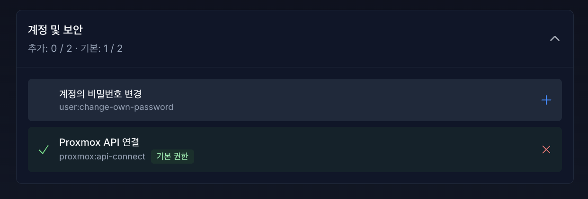
기능별 카테고리 목록에 X 버튼을 클릭하여 권한을 제거할 수 있습니다.
삭제된 권한은 + 버튼과 함께 권한에서 제거됩니다.
3.2.2 기본 권한 추가(관리자만)#
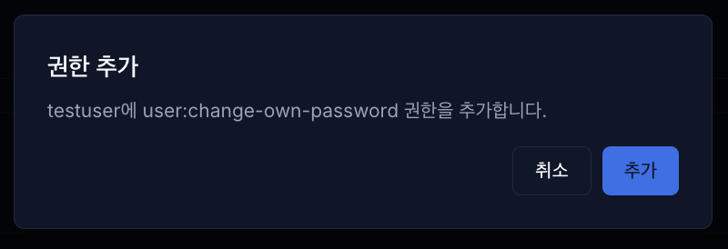

제거되어 있던 기본 권한을 다시 추가하면 기본 권한 표시와 함께 다시 할당됩니다.
3.2.3 CUSTOM 계정#
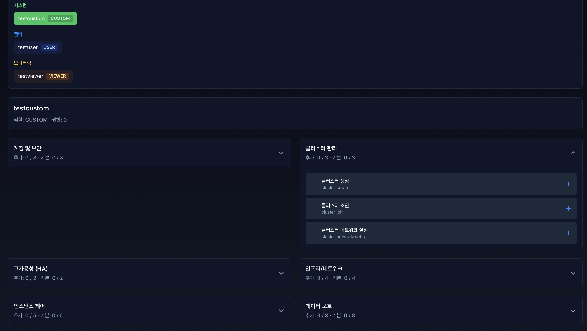
커스텀(CUSTOM) 역할은 특정 운영 환경이나 담당자의 업무 범위에 맞춰 관리자가 권한을 자유롭게 조립할 수 있는 가장 유연한 계정 등급입니다.
계정 생성 초기에는 어떠한 기본 권한도 부여되지 않은 완전한 무권한 상태(권한: 0)로 시작합니다.
시스템 관리자는 ‘계정 및 보안’, ‘클러스터 관리’ 등의 세부 카테고리에서 해당 사용자에게 필수적인 개별 접근 권한(예: 사용자 등록, 역할 변경 등) 우측의 추가(+) 버튼을 사용하여 필요한 권한만 수동으로 할당하거나 취소할 수 있습니다.
3.3 관리자 외 권한 관리 제어 금지#

접속한 계정이 관리자가 아니라면 제어 권한이 없다는 메시지가 표시되며 제어 불가능합니다. (현재 접속 예시: 모니터링 역할 계정)
4. Pool 관리#
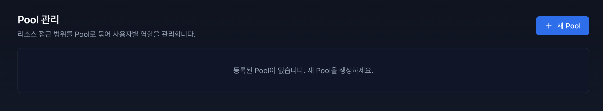
Pool 관리 기능은 리소스 접근 범위를 Pool 단위로 묶고, 사용자별 Pool 역할을 관리하는 기능입니다.
화면에서 Pool 생성, 리소스 연결/해제, 사용자 Pool 역할 할당/해제, Pool 삭제를 수행할 수 있습니다.
4.1 시작하기 전에 (권한 및 접근)#
조회 권한:
pool:read또는pool:manage관리 권한:
pool:manage(생성/삭제/연결/해제/역할 할당)역할 할당 제한:
ADMIN,SUPER_ADMIN계정에는 Pool 역할을 할당할 수 없습니다.
4.2 Pool 생성 및 목록#
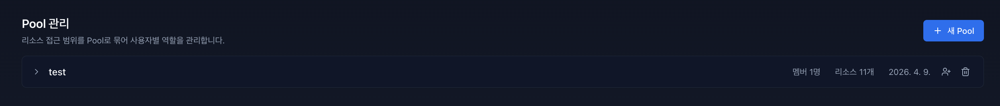
4.2.1 새 Pool 생성#

우측 상단 [+ 새 Pool] 버튼으로 생성합니다.
입력 항목:
Pool 이름(필수)
설명(선택)
동일 이름의 Pool이 이미 존재하면 생성할 수 없습니다.
4.2.2 목록에서 확인 가능한 정보#
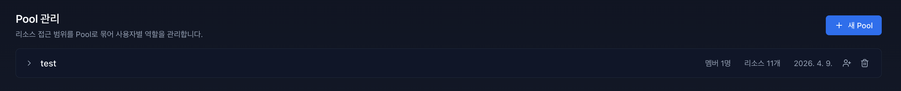
Pool 이름 / 설명
멤버 수
리소스 수
생성일
4.3 주요 관리 작업#
4.3.1 리소스 연결#

Pool 카드 확장 후 리소스 연결 영역에서 유형과 식별자를 입력하여 연결합니다.
연결 가능 유형:
VM/CT
네트워크
스토리지
식별자 형식:
VM/CT:
nodeId:qemu|lxc:vmid(예:phum03:qemu:101)네트워크:
nodeId:iface(예:phum03:vmbr0)스토리지:
storageId(예:local-lvm)
리소스 식별자는 한 번에 1개만 입력할 수 있으며, 이미 다른 Pool에 연결된 리소스는 중복 연결할 수 없습니다.
4.3.2 리소스 해제#
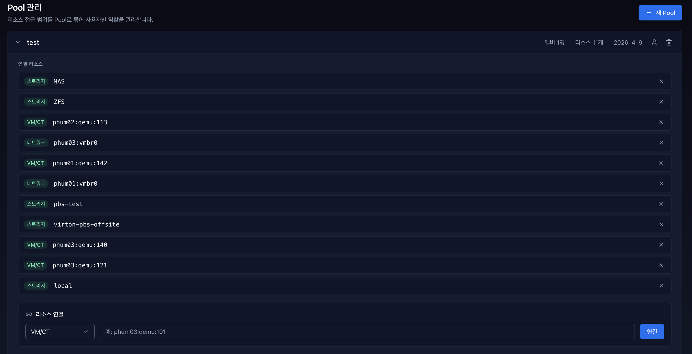
연결 리소스 우측 [X] 버튼으로 해제합니다.
4.3.3 사용자 역할 할당/해제#
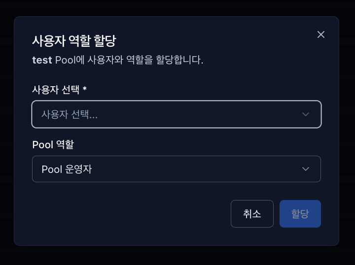

Pool 카드의 사용자 추가 아이콘으로 역할을 할당합니다.
할당 가능한 Pool 역할:
Pool 관리자 (POOL_ADMIN)
Pool 운영자 (POOL_OPERATOR)
사용자 역할 목록 우측 [X] 버튼으로 역할을 해제할 수 있습니다.
4.4 Pool 삭제#
Pool 카드 우측 휴지통 아이콘으로 삭제할 수 있습니다.
삭제 시 해당 Pool의 사용자 역할 매핑과 리소스 매핑이 함께 삭제됩니다.
5. 보안 관리#
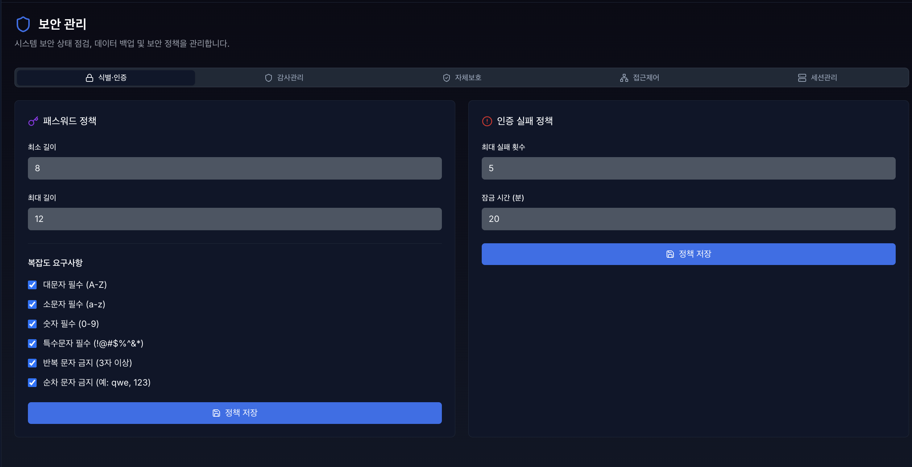
보안 관리 기능은 시스템의 전반적인 보안 상태를 점검하고 정책을 중앙에서 통제하는 핵심 인프라 보안 기능입니다. 관리자는 상단의 5가지 탭**(식별·인증, 감사관리, 자체보호, 접근제어, 세션관리)**을 통해 시스템별로 세분화된 보안 설정을 제어할 수 있습니다.
5.1 식별·인증#
5.1.1 패스워드 정책#
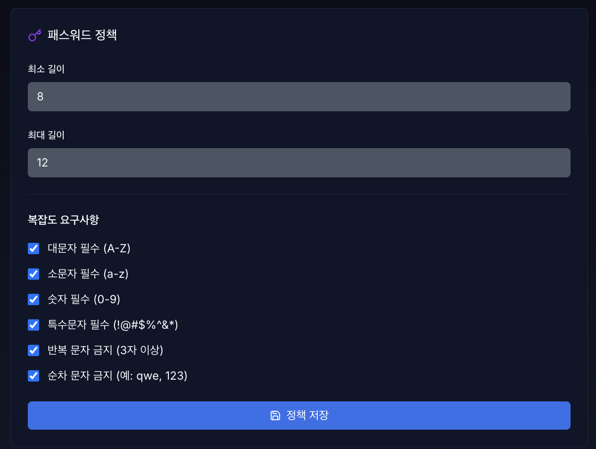
시스템 내 모든 사용자 계정의 비밀번호 생성 규칙을 전역으로 강제하여, 취약한 비밀번호로 인한 계정 탈취 및 무작위 대입 공격을 예방하는 핵심 보안 설정입니다.
비밀번호 길이: 비밀번호의 최소 및 최대 길이를 지정하여 기본적인 보안 강도를 확보합니다.
문자 조합(복잡도): 영문 대문자, 영문 소문자, 숫자, 특수문자 중 비밀번호에 반드시 포함되어야 할 필수 요소를 개별적으로 선택하여 복잡도를 강제할 수 있습니다.
취약 패턴 사용 제한: 동일 문자 반복이나 연속 문자와 같이 해킹에 취약하고 유추하기 쉬운 패턴이 비밀번호에 포함되지 않도록 엄격하게 차단합니다.
5.1.2 인증 실패 정책#
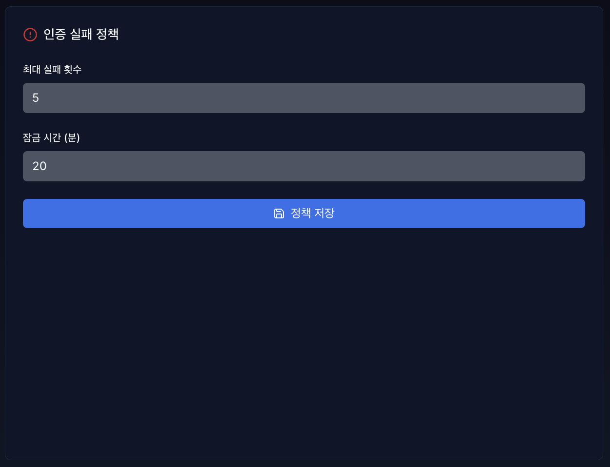
악의적인 로그인 시도로부터 시스템과 사용자 계정을 안전하게 보호하기 위한 자동 차단 기능입니다.
최대 실패 횟수: 연속으로 로그인을 실패하 수 있는 허용 기준치를 설정합니다. 사용자가 이 횟수를 초과하여 비밀번호를 틀릴 경우, 시스템 보호를 위해 해당 계정은 즉시 잠금 처리됩니다.
잠금 시간(분): 실패 횟수를 초과하여 잠겨버린 계정의 시스템 접근을 일시적으로 차단하는 시간을 분 단위로 지정합니다. 설정된 시간이 지나면 계정 잠금 상태가 자동으로 해제됩니다.
5.2 감사관리#
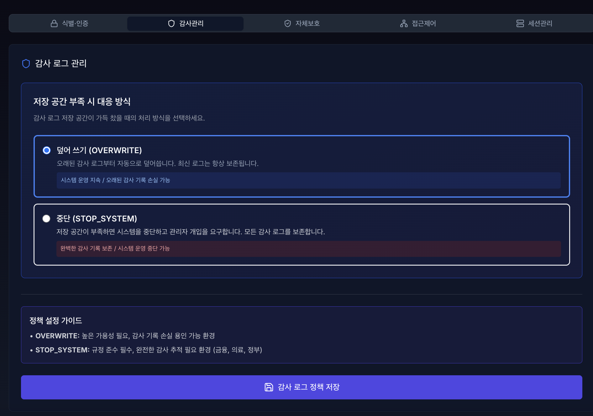
이 기능은 시스템의 감사 로그를 저장하는 공간이 가득 찼을 때, 시스템이 어떤 방식으로 대처할 지 관리자가 사전에 정책을 저장하는 기능입니다. 운영 중인 서비스의 성격과 보안 규정에 맞춰 두 가지 방식 중 하나를 선택할 수 있습니다.
덮어 쓰기: 저장 공간이 꽉 차며느 가장 오래된 감사 로그부터 순차적으로 삭제하고 그 자리에 새로운 로그를 덮어써서 저장합니다.
중단: 저장 공간이 부족해지면, 로그를 남길 수 없는 상태로 판단해 시스템의 운영을 즉시 중단합니다. 이후 관리자가 직접 개입할 때까지 대기합니다.
5.3 자체보호#
5.3.1 보안 기능 자체시험 수행#
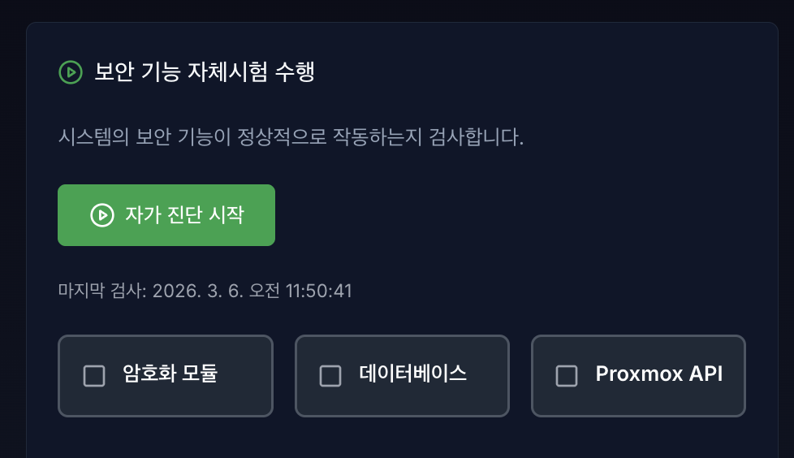
시스템의 보안 기능에서 주요 프로세스가 정상적으로 동작하는지 실시간으로 검사하는 기능입니다.
점검 대상
암호화 모듈: 사용자의 비밀번호나 중요 데이터가 정상적으로 암·복호화되고 있는지 확인합니다.
데이터베이스: DB 서버와의 연결 상태 및 데이터 읽기/쓰기 기능에 이상이 없는지 확인합니다.
Proxmox API: 가상화 인프라(Proxmox)를 제어하기 위한 API 통신이 정상적으로 이루어지고 있는지 확인합니다.
사용 방법: 검사할 항목의 체크박스를 선택한 후, [자가 진단 시작] 버튼을 클릭하면 즉시 테스트가 수행됩니다.
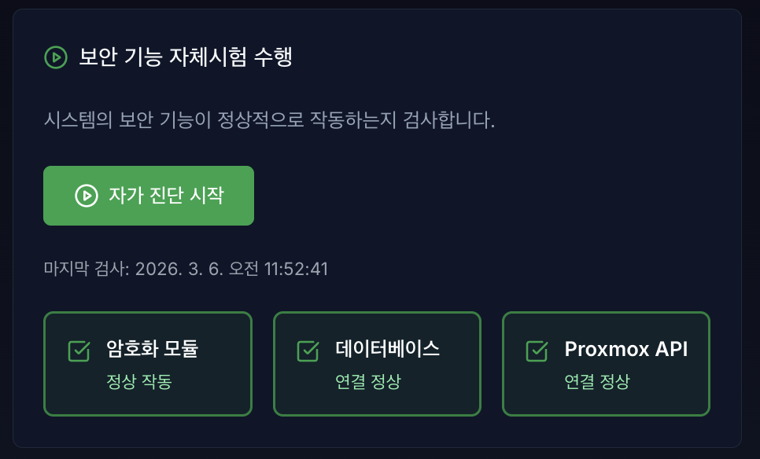
5.3.2 자체시험 실패 시 대응 정책#
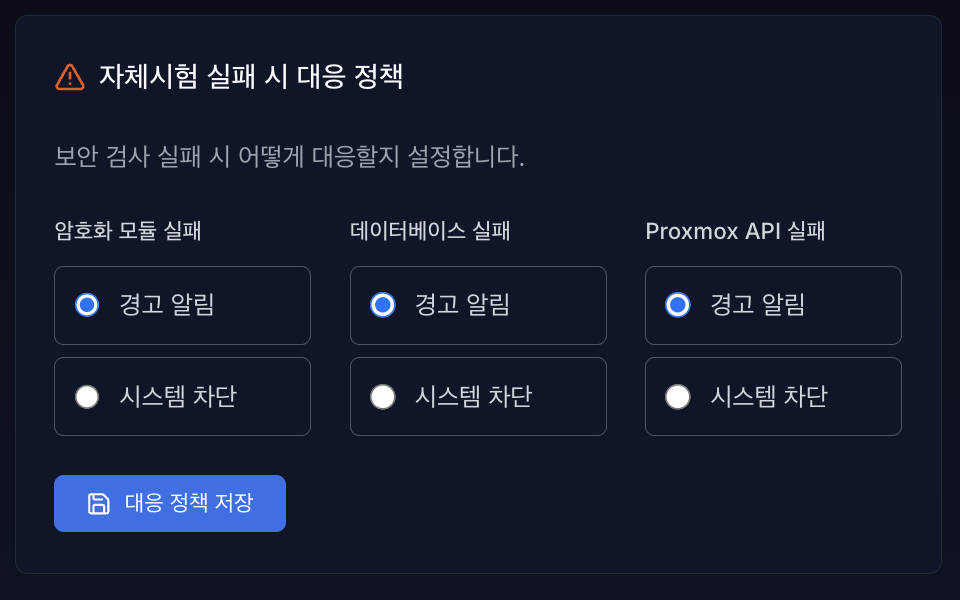
시스템 내부에서 주기적으로, 또는 수동으로 수행된 자체시험에서 ‘실패(Error)’ 가 발생했을 때의 시스템 동작 방식을 설정합니다.
경고 알림
동작: 해당 모듈의 검사가 실패하더라도 시스템의 전체 운영은 그대로 유지됩니다. 대신, 관리자에게 즉시 장애 상황을 알림(로그 기록, 화면 표시 등)으로 경고합니다.
시스템 차단 - 🚨 주의 요망 - 동작: 이 정책으로 설정된 모듈 중 **단 하나라도 검사에 실패할 경우, 2차 보안 사고나 데이터 오염을 막기 위해 즉시 ‘전체 시스템의 접근 및 동작이 전면 차단’**됩니다. VirtOn System Backup & Restore 기능은 현재 구동 중인 가상머신(VM) 전체를 스냅샷 방식으로 이미지화하여 저장합니다. 운영체제(OS), 데이터베이스(DB), 애플리케이션 설정, 로그 파일 등 시스템의 모든 상태가 포함되므로, 랜섬웨어 감염이나 서버 장애 시 복구가 가능합니다.
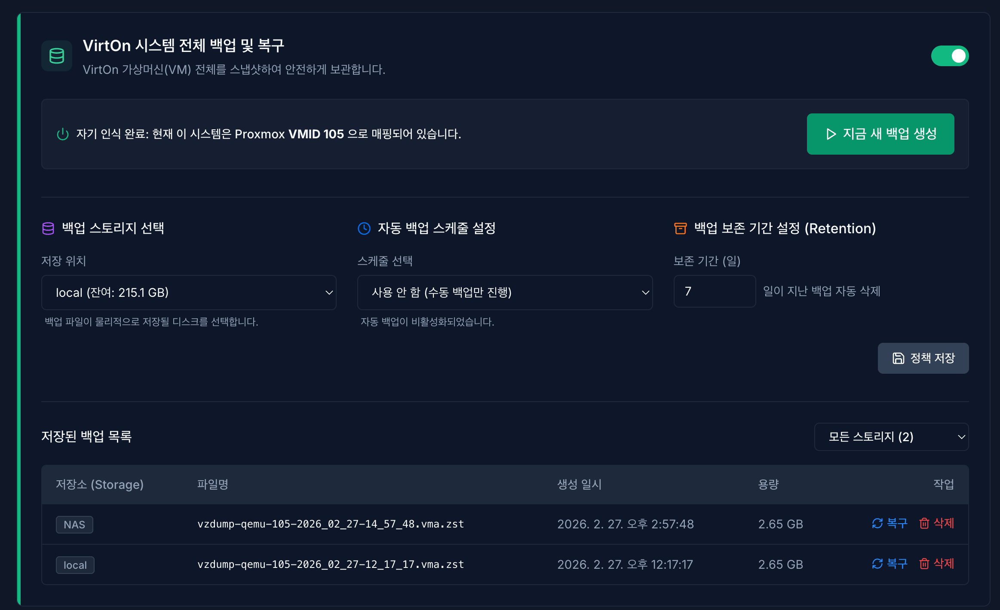
5.4 시작하기 전에 (권한 및 접근)#
접근 권한: 이 페이지는 시스템의 핵심 기능을 다루므로 관리자(ADMIN) 및 최고 관리자(SUPER_ADMIN) 권한을 가진 사용자만 접근할 수 있습니다.
백업 대상 선택:
VirtOn 시스템 전체 백업 및 복구를 사용하려면, 현재 VirtOn이 배포된 QEMU VM의 노드와 VMID를 먼저 등록해야 합니다.
5.4.1 백업 기능 활성화/비활성화#
페이지 우측 상단의 토글 스위치를 통해 백업 기능을 제어할 수 있습니다.
활성화 (ON): 시스템 탐색을 수행하고 백업 설정 폼과 리스트를 불러옵니다.
비활성화 (OFF): 백업 기능을 끕니다. 비활성화 상태에서는 자동 백업 스케줄도 동작하지 않습니다.
5.4.2 백업 정책 설정 (Configuration)#
중앙의 설정 패널에서 백업 저장 위치, 주기, 보존 기간을 설정할 수 있습니다. 설정을 변경한 후 반드시 우측의 [💾 정책 저장] 버튼을 눌러야 적용됩니다.
① 백업 스토리지 선택 (Storage)#
백업 파일이 물리적으로 저장될 디스크를 선택합니다.
드롭다운을 열면 연결된 스토리지 목록과 잔여 용량이 표시됩니다.
용량이 넉넉한 스토리지를 선택하는 것을 권장합니다.
② 자동 백업 스케줄 설정 (Schedule)#
시스템이 자동으로 백업을 수행할 시간을 지정합니다.
사용 안 함: 자동 백업을 끕니다 (수동 백업만 가능).
매일/매주/매월: 트래픽이 적은 새벽 시간대(00:00, 02:00, 04:00 등)를 선택할 수 있습니다.
③ 백업 보존 기간 설정 (Retention)#
오래된 백업 파일이 디스크 용량을 차지하는 것을 방지합니다.
입력한 일수(기본 30일)가 지난 백업 파일은 매일 새벽 3시에 자동으로 영구 삭제됩니다.
5.4.3 백업 실행하기#
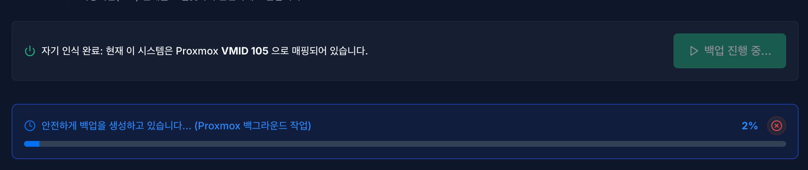
▶ 수동 백업 (Manual Backup)#
긴급 점검 전이나 중요한 변경 사항 적용 전에 즉시 백업을 생성합니다.
상단의 [▷ 지금 새 백업 생성] 버튼을 클릭합니다.
백업이 시작되면 상단에 진행률 게이지(Blue Bar)가 표시됩니다.
백업은 Proxmox 백그라운드에서 진행되므로, 페이지를 이동해도 작업은 계속됩니다.
진행률 모니터링 및 중단#
백업 또는 복구 작업이 진행 중일 때, 실시간 진행률(%)이 게이지에 표시됩니다.
작업을 멈추고 싶다면 게이지 우측의 [X 중단] 버튼을 클릭하여 강제로 종료할 수 있습니다.
5.4.4 백업 목록 관리 및 조회#
하단의 테이블에서 저장된 모든 백업 파일을 확인하고 관리할 수 있습니다.
필터링 (스토리지별 조회)#
테이블 우측 상단의 드롭다운(Select Box)을 통해 특정 스토리지에 저장된 백업만 모아볼 수 있습니다.
모든 스토리지: 전체 백업 목록을 최신순으로 표시합니다.
개별 스토리지 (예: NAS): 해당 스토리지의 파일만 필터링합니다. 각 스토리지별 파일 개수도 함께 표시됩니다.
테이블 정보#
저장소 (Storage): 파일이 위치한 스토리지 이름 (뱃지 형태)
파일명: Proxmox 백업 파일명 (
vzdump-qemu-105...)생성 일시: 백업이 완료된 날짜와 시간
용량: 백업 파일의 크기 (GB 단위)
백업 삭제#
필요 없는 백업 파일은 우측의 [삭제] 버튼(빨간색 휴지통 아이콘)을 눌러 지울 수 있습니다.
삭제 시 확인 모달창이 뜨며, 승인하면 파일이 영구적으로 제거됩니다.
5.4.5 시스템 복구 (Restoration)#
장애 발생 시 특정 시점의 백업 파일로 시스템을 되돌립니다.
⚠️ 주의: 복구 방식 (Safe Clone Restore)
VirtOn은 운영 중인 서버가 멈추는 것을 방지하기 위해 “새로운 가상머신(New VM)”을 생성하여 복구합니다. 기존 서버(105번)를 덮어쓰지 않으므로 안전합니다.
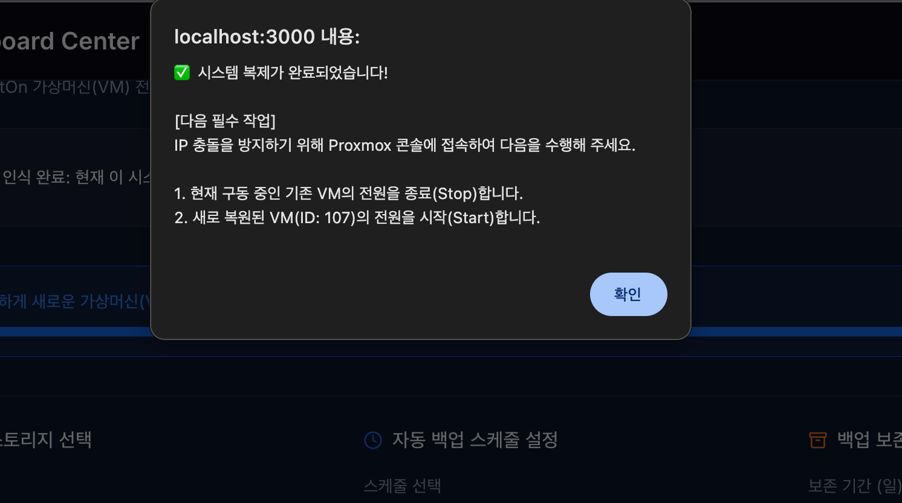
복구 절차#
백업 목록에서 원하는 시점의 파일 우측 [복구] 버튼(파란색 아이콘)을 클릭합니다.
확인 알림창에서 내용을 숙지하고 [확인]을 누릅니다.
상단 게이지를 통해 복구 진행률이 표시됩니다 (예: “안전하게 새로운 가상머신으로 시스템을 복원하고 있습니다…”).
복구가 100% 완료되면:
Proxmox에 새로운 번호(예: VM 106)를 가진 가상머신이 생성됩니다.
관리자는 Proxmox 콘솔에서 기존 VM(예: 105번)을 끄고, 새 VM(예: 106번)을 켜서 서비스를 교체(Switching)합니다.
5.4.6 문제 해결 (Troubleshooting)#
백업 버튼이 비활성화 되어 있어요: 이미 백업이나 복구 작업이 진행 중인 경우, 중복 실행을 막기 위해 버튼이 잠깁니다. 작업이 끝날 때까지 기다리거나 [중단] 버튼을 눌러주세요.
게이지가 0%에서 멈춰 있어요: 대용량 스토리지의 경우 초기 공간 할당에 시간이 소요될 수 있습니다. 약 1~2분 정도 기다리면 정상적으로 숫자가 올라갑니다.
복구 후 접속이 안 돼요: 복구된 시스템은 새로운 VM입니다. IP 충돌 방지를 위해 기존 VM을 끄고 새 VM을 부팅했는지 확인해주세요.
5.5 관리자 IP 접근 제어 (IP Access Control)#

VirtOn은 외부 공격 및 비인가 접근을 방지하기 위해
IP 기반 접근 제어(화이트리스트 / 블랙리스트)를 제공합니다.
5.5.1 보안 정책 (작동 원리)#
시스템은 화이트리스트 등록 상태에 따라 자동으로 모드가 전환됩니다.
개방 모드 (Open Mode)#
조건: 화이트리스트 IP가 0개일 경우
동작: 블랙리스트에 없는 모든 IP 접근 허용
잠금 모드 (Lockdown Mode)#
조건: 화이트리스트 IP가 1개 이상 등록될 경우
동작: 화이트리스트 IP만 접근 허용 (강력 보안)
5.6 주요 기능 사용법#
5.6.1 내 IP 간편 등록 (권장)#

화이트리스트 최초 설정 시, 본인 IP 차단을 방지하기 위한 기능입니다.
상단 경고 배너 “현재 접속 중인 IP가 화이트리스트에 없습니다!” 확인
[내 IP 입력하기] 버튼 클릭
자동 입력된 IP 확인 후 [추가] 클릭
5.6.2 IP 직접 등록#
유형 선택
WHITELIST: 허용 IP (관리자 PC, 사무실 IP)BLACKLIST: 차단 IP (공격 의심 IP 등)
IP 주소
단일 IP만 허용
예:
123.456.0.10❌ 와일드카드, CIDR(
192.168.0.0/24) 불가
메모
식별 가능한 설명 입력
예:
OOO 팀장 자택
5.6.3 IP 수정 및 삭제#

IP 수정 : 리스트 더블 클릭 혹은 펜슬 아이콘 클릭 시 사용 가능, 수정 방법은 IP 직접 등록과 동일
IP 삭제 : 리스트 쓰레기통 아이콘 클릭 시 삭제 가능
5.6.4 자동 차단 (IPS)#
짧은 시간 내 반복 로그인 실패 IP는 자동 블랙리스트 등록
오차단 시 목록에서 해당 IP를 찾아 [삭제] 버튼 클릭 시 즉시 해제
5.6.5 긴급 조치 가이드 (Lockout 상황)#
유일한 화이트리스트 IP 삭제 또는
등록되지 않은 위치에서의 긴급 접속이 필요한 경우 접근이 차단될 수 있습니다.
이 경우 DB 관리자에게 직접 연락하여 조치를 받아야 합니다.
5.7 세션관리#
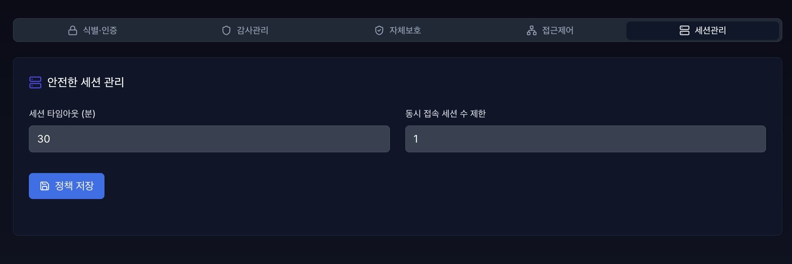
이 기능은 시스템에 로그인한 사용자의 접속 유지 시간과 동시 접속 기기 수를 제어하여, 비인가자의 무단 접근이나 계정 공유로 인한 보안 사고를 방지하는 기능입니다.
세션 타임아웃: 사용자가 로그인한 시점부터 계산하여, 설정한 시간이 경과하면 무조건 세션을 만료시키고 강제 로그아웃 처리하는 ‘최대 접속 허용 시간’을 설정합니다.
동시 접속 세션 수 제한: 하나의 관리자 계정으로 동시에 여러 기기나 브라우저에서 로그인할 수 있는 최대 개수를 제한합니다.
세션 타임아웃과 동시 접속 세션 수 제한 설정은 새로운 세션 기반이므로 바로 적용을 원한다면 로그아웃 후 다시 로그인 해주세요.
6. 이메일 알림 설정#


VirtOn 시스템에서 발생하는 중요한 보안 이벤트(예: 5회 이상 로그인 실패로 인한 계정 잠금, 디스크 용량 임계치 초과 등)를 즉각적으로 인지할 수 있도록 이메일 알림을 설정하는 공간입니다.
6.1 이메일 알림 비활성화 상태#
시스템에 **전역 발송 서버(SMTP)**가 등록되지 않은 초기 상태에서는 개인 알림 이메일을 설정할 수 없도록 입력 폼이 비활성화됩니다.
조치 방법: SUPER_ADMIN 또는 ADMIN 권한을 가진 관리자가 하단의 **[전역 메일 발송 서버 (SMTP) 설정]**을 먼저 완료해야 합니다.
6.2 내 알림 이메일 설정 (모든 사용자 공통)#
관리자에 의해 SMTP 서버가 정상적으로 연동되면, 모든 사용자는 본인의 보안 경고 및 시스템 알림을 수신할 이메일 주소를 등록할 수 있습니다.
수신 이메일 주소 입력: 알림을 받을 본인의 실제 이메일 주소를 입력합니다. (예: alert@virton.local)
[저장] 버튼 클릭: 이메일 주소를 시스템에 등록합니다.
[내 이메일로 테스트 발송] 클릭: 설정한 이메일로 알림이 정상적으로 수신되는지 즉시 테스트합니다.
발송 성공 시 우측 상단에 완료 알림이 표출되며, 메일함에서 VirtOn 발송 테스트 메일을 확인할 수 있습니다.
💡 참고 > 테스트 메일이 도착하지 않는다면 스팸 메일함을 먼저 확인해 주시고, 그래도 수신되지 않는다면 사내 메일 방화벽 문제일 수 있으므로 관리자에게 문의하세요.
6.3 전역 메일 발송 서버 (SMTP) 설정 (관리자 전용)#
VirtOn 시스템이 알림 메일을 발송할 때 사용할 공용 우체국(메일 서버)을 설정하는 기능입니다. 이 구역은 보안을 위해 SUPER_ADMIN 및 ADMIN 권한을 가진 사용자에게만 노출됩니다.
6.3.1 입력 항목 설명#
항목 |
설명 |
예시 |
|---|---|---|
SMTP 호스트 (주소) |
이용 중인 메일 서버의 주소 (도메인 또는 IP) |
|
포트 (Port) |
메일 발송 포트 (보안 설정에 따라 다름) |
|
계정 (선택) |
메일 서버 인증에 필요한 ID (내부망 릴레이의 경우 생략 가능) |
|
비밀번호 (선택) |
메일 서버 인증 비밀번호 또는 앱 비밀번호 |
- |
SSL/TLS 보안 연결 |
암호화 통신 사용 여부 (체크 시 보안 강화) |
|
발신자 표시명 (From) |
수신자의 메일함에 표시될 보내는 사람의 이름과 주소 |
|
6.3.2 적용 및 테스트 순서#
사내 인프라 또는 외부 클라우드 메일 서비스(Google Workspace, AWS SES 등)의 SMTP 정보를 입력합니다.
우측 하단의 [전역 서버 설정 저장] 버튼을 클릭하여 DB에 설정을 반영합니다.
저장이 완료되면 상단의 [내 알림 이메일 설정] 폼이 즉시 활성화됩니다.
상단 폼에 본인의 이메일을 입력하고 **[내 이메일로 테스트 발송]**을 클릭하여 서버 연동이 완벽하게 이루어졌는지 최종 검증합니다.
🚨 주의 > 전역 SMTP 설정을 잘못된 값으로 변경하면 전체 시스템의 보안 알림 발송이 중단됩니다. 설정 변경 시에는 반드시 [내 이메일로 테스트 발송] 기능을 통해 정상 작동 여부를 확인해 주시기 바랍니다.